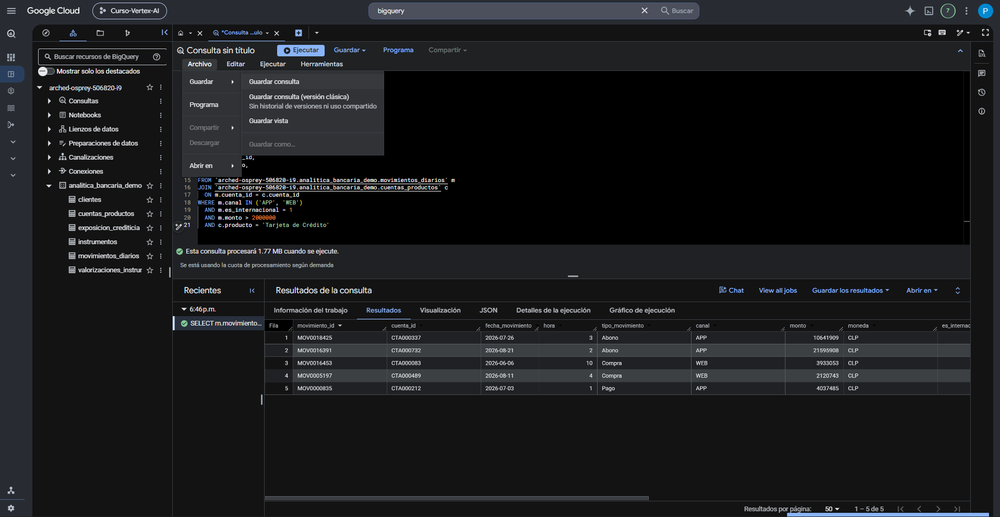

GoogleSQL — relaciones y JOIN
Un JOIN permite combinar información que está repartida entre tablas. La sintaxis es relativamente corta; lo importante es comprender qué relaciona las tablas, cuántas filas puede producir la unión y qué representa una fila después de ejecutarla.
1. ¿Por qué relacionar tablas?
Una tabla no siempre contiene todos los atributos que necesitamos. Por ejemplo, un movimiento puede contener el cuenta_id, monto y canal, mientras que el tipo de producto asociado a esa cuenta vive en cuentas_productos.
movimiento + cuenta + monto + canal
cuenta + cliente + producto
movimiento + producto
2. La llave de unión
Antes de escribir un JOIN debes identificar qué campo permite relacionar las tablas y qué significa ese campo en cada lado.
| Relación del curso | Llave | Lectura |
|---|---|---|
| clientes ↔ cuentas_productos | cliente_id | Una cuenta pertenece a un cliente. |
| cuentas_productos ↔ movimientos_diarios | cuenta_id | Un movimiento corresponde a una cuenta. |
| clientes ↔ exposicion_crediticia | cliente_id | Una exposición está asociada a un cliente. |
| instrumentos ↔ valorizaciones_instrumentos | instrumento_id | Una valorización corresponde a un instrumento. |
3. JOIN / INNER JOIN
En GoogleSQL, JOIN sin calificativo se utiliza como INNER JOIN. Conserva las combinaciones de filas que cumplen la condición de unión.
SELECT
c.cliente_id,
c.segmento,
cp.cuenta_id,
cp.producto,
cp.saldo_actual
FROM `arched-osprey-506820-i9.analitica_bancaria_demo.clientes` AS c
JOIN `arched-osprey-506820-i9.analitica_bancaria_demo.cuentas_productos` AS cp
ON c.cliente_id = cp.cliente_id
LIMIT 20;Lectura natural:

4. LEFT JOIN
LEFT JOIN conserva todas las filas de la tabla izquierda. Cuando una fila izquierda no encuentra coincidencia a la derecha, las columnas exclusivas de la derecha aparecen como NULL.
SELECT
c.cliente_id,
c.segmento,
cp.cuenta_id,
cp.producto
FROM `arched-osprey-506820-i9.analitica_bancaria_demo.clientes` AS c
LEFT JOIN `arched-osprey-506820-i9.analitica_bancaria_demo.cuentas_productos` AS cp
ON c.cliente_id = cp.cliente_id;INNER JOIN
Conserva coincidencias entre ambos lados.
LEFT JOIN
Conserva todas las filas de la izquierda, tengan o no coincidencia.
5. ON: la condición que relaciona las filas
La cláusula ON expresa la condición booleana utilizada para emparejar filas.
Ejemplo:
ON m.cuenta_id = cp.cuenta_idAquí m y cp son alias de tablas. Los alias evitan ambigüedades cuando ambas tablas tienen columnas con el mismo nombre.
6. Cardinalidad: uno a uno, uno a muchos y muchos a muchos
La cardinalidad describe cuántas filas de un lado pueden relacionarse con filas del otro. Esta idea explica por qué un JOIN puede aumentar la cantidad de filas.
Uno a uno
Una fila de A se relaciona como máximo con una fila de B.
Uno a muchos
Una fila de A puede relacionarse con varias filas de B. Ejemplo: un cliente puede tener varias cuentas.
Muchos a muchos
Varias filas de A pueden coincidir con varias filas de B. Si no es deliberado, puede multiplicar el resultado de forma inesperada.
7. El grano después del JOIN
Después de unir clientes con cuentas_productos, una fila ya no representa un cliente único. Representa una cuenta enriquecida con atributos del cliente.
1 fila = 1 cliente
1 fila = 1 cuenta/producto
1 fila = 1 cuenta/producto con datos del cliente
8. Duplicación inesperada
Un JOIN no “duplica” filas arbitrariamente: produce una fila por cada combinación que cumple la condición. Si una llave aparece varias veces en ambos lados, el número de combinaciones puede crecer.
Ejemplo conceptual:
| Tabla A | Tabla B | Resultado |
|---|---|---|
| 2 filas con clave X | 3 filas con clave X | 6 combinaciones para X |
9. Controles antes y después de un JOIN
No necesitas ejecutar todos estos controles en cada consulta, pero debes conocer las preguntas que resuelven.
| Control | Pregunta |
|---|---|
| Revisar grano | ¿Qué representa una fila en cada tabla? |
| Revisar llave | ¿Qué campo conecta realmente las tablas? |
| Comprobar unicidad | ¿La llave que considero única está repetida? |
| Comparar conteos | ¿La cantidad de filas cambió como esperaba? |
| Buscar NULL tras LEFT JOIN | ¿Qué registros no encontraron correspondencia? |
| Revisar identificador final | ¿Sigue siendo único el identificador que esperaba conservar? |
SELECT
cliente_id,
COUNT(*) AS veces
FROM `arched-osprey-506820-i9.analitica_bancaria_demo.clientes`
GROUP BY cliente_id
HAVING COUNT(*) > 1;Si una columna debe actuar como identificador único y esta consulta devuelve filas, la supuesta unicidad debe revisarse.
10. El JOIN de la Prueba Tipo
La evaluación necesita combinar dos fuentes porque ninguna contiene por sí sola todas las condiciones del criterio.
| Condición | Tabla |
|---|---|
| Canal APP o WEB | movimientos_diarios |
| Operación internacional | movimientos_diarios |
| Monto mayor a 2.000.000 | movimientos_diarios |
| Producto = Tarjeta de Crédito | cuentas_productos |
La llave común es cuenta_id:
SELECT
m.movimiento_id,
m.cuenta_id,
m.fecha_movimiento,
m.canal,
m.monto,
cp.cliente_id,
cp.producto,
cp.estado
FROM `arched-osprey-506820-i9.analitica_bancaria_demo.movimientos_diarios` AS m
JOIN `arched-osprey-506820-i9.analitica_bancaria_demo.cuentas_productos` AS cp
ON m.cuenta_id = cp.cuenta_id
ORDER BY
m.fecha_movimiento,
m.movimiento_id;Después, las cuatro condiciones se aplican en WHERE. El resultado debe conservar el detalle de cada movimiento seleccionado.

La secuencia pedagógica se mantiene alineada con la Clase 3: primer JOIN → cambio de grano → INNER vs LEFT JOIN → controles de calidad → uso de JOIN en una pregunta analítica.